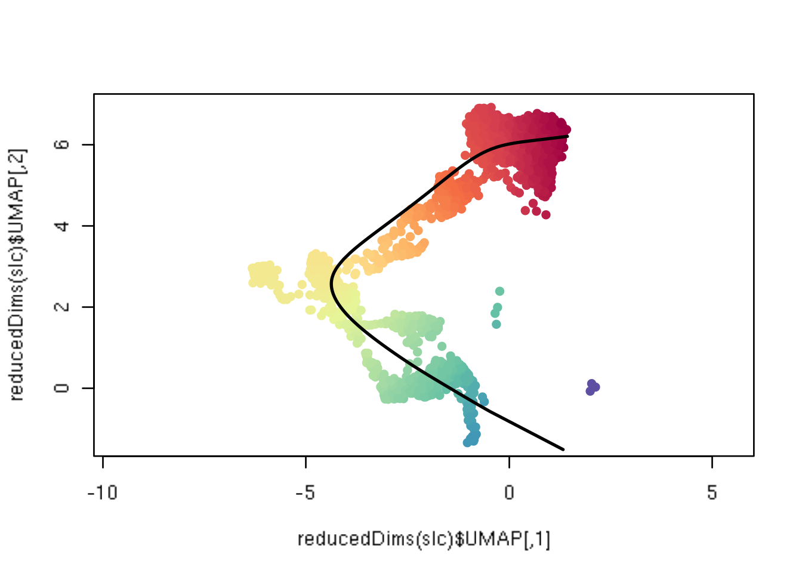
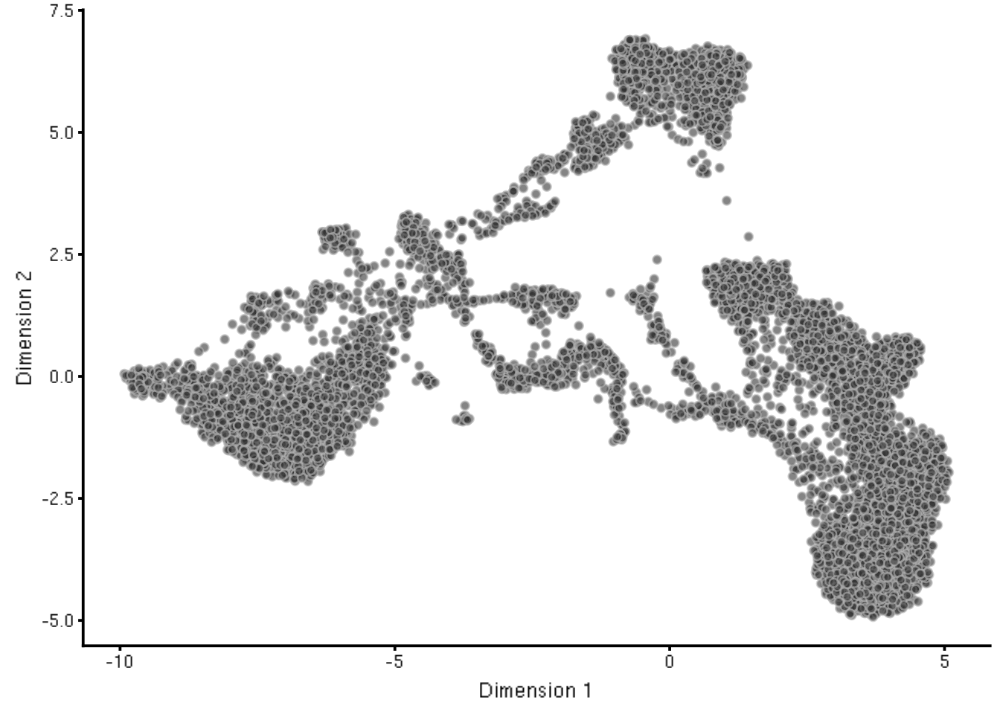
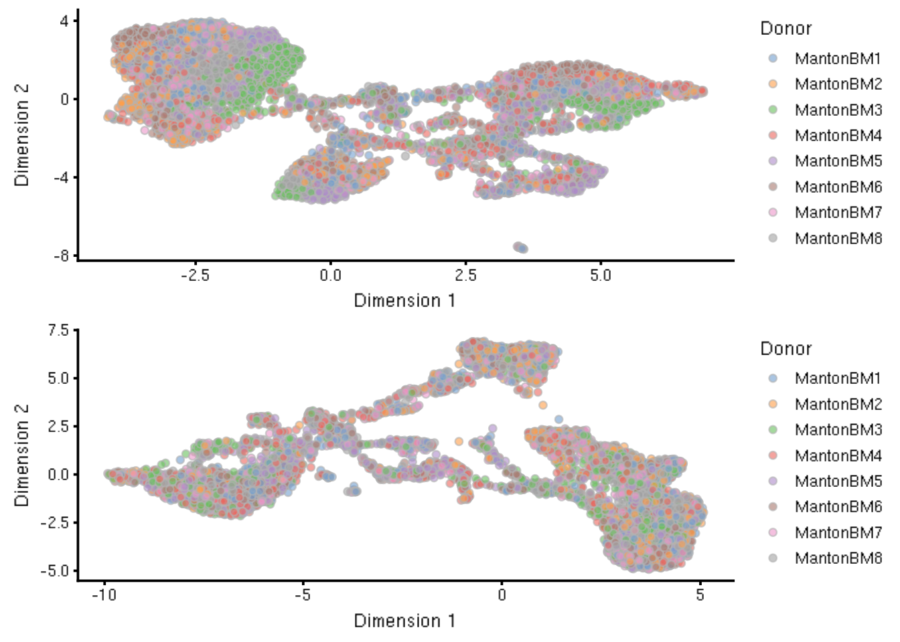
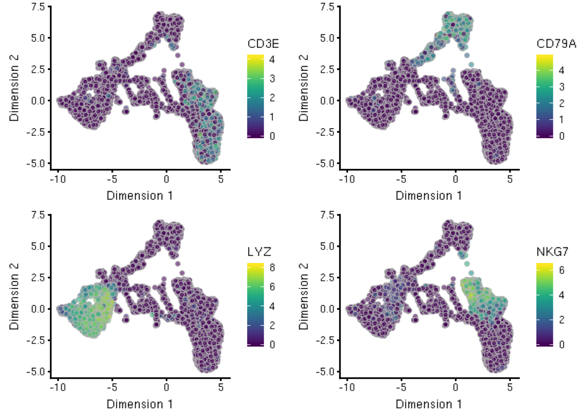
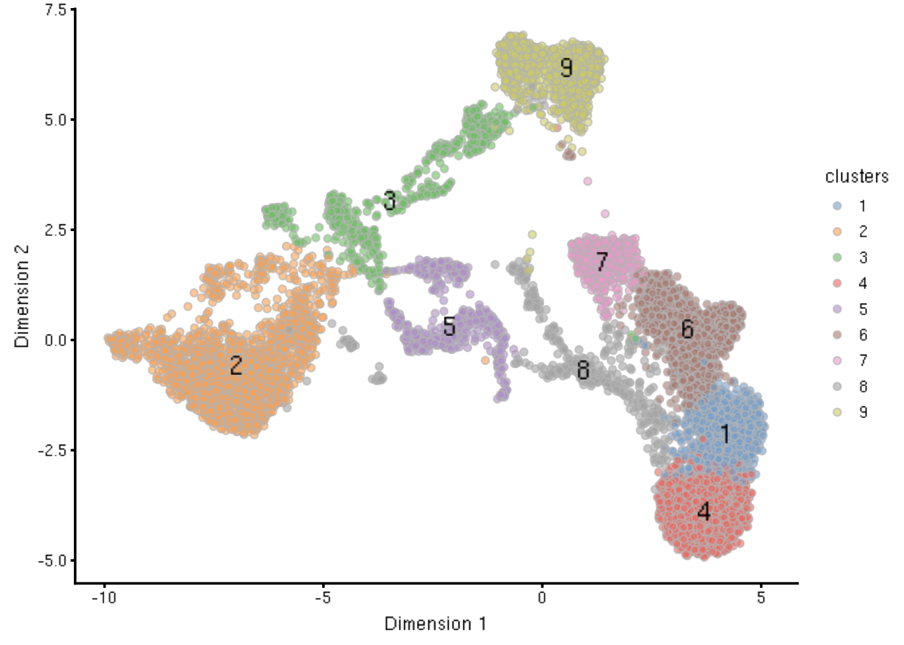
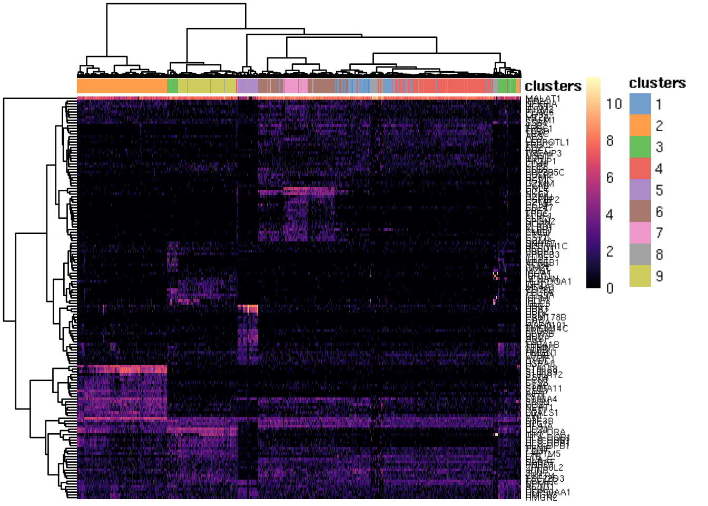
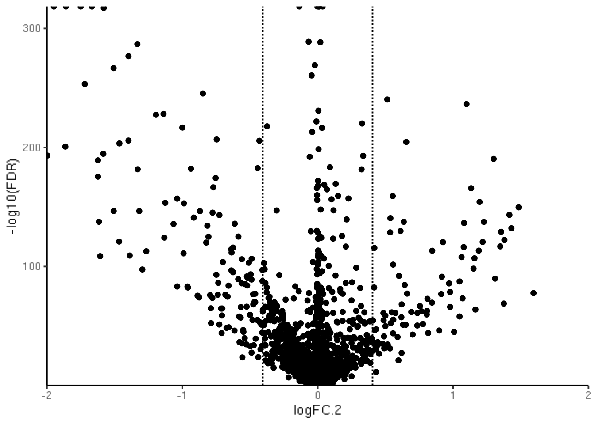
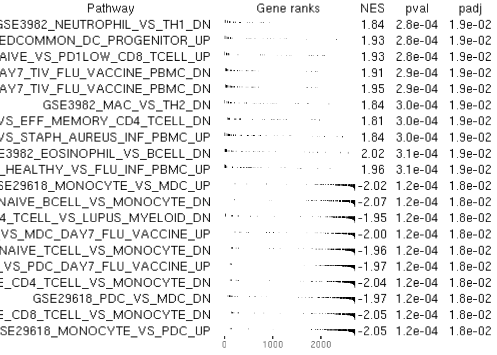
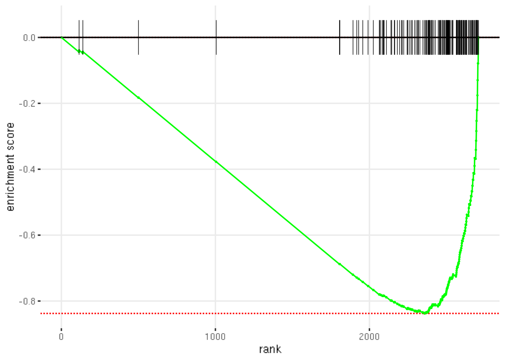

Chapter 6 Quick Start
To make it as easy as possible to get started fast, here we simply provide a script that walks through a typical, basic scRNA-seq analysis in code, with prose as comments (#), and all visualization held until the end of the script. The next chapter - “A Basic Analysis” - will provide more commentary on the various steps throughout, as well as relevant intermediate plotting results.
Here, we use an example dataset from the Human Cell Atlas immune cell profiling project on bone marrow. This dataset is loaded via the HCAData package, which provides a ready to use SingleCellExperiment object.
Note that the HCAData bone marrow dataset is comprised of 8 donors, so we have added an integration step to ameliorate batch effects caused by different donors. However, for use cases where integration is not necessary (e.g. no expected batch effects), we note in the code what to skip and relevant arguments to replace.
Lastly, note that some arguments are added for the sake of reducing computational runtime and can be modified or removed. These include parallelization via BPPARAM, and different algorithms for SVD and nearest-neighbor via BSPARAM and BNPARAM. See the “Adaptations for Large-scale Data” chapter for more information on these arguments.
6.1 Code
## Setup ---------------------------------------------------
## not run - uncomment these lines to install necessary pkgs
## install.packages('BiocManager')
## BiocManager::install(version = 'devel') # devel=3.10
## BiocManager::install(c(
## 'HCAData', # dataset
## 'scater', 'scran', 'batchelor', # processing
## 'igraph', # clustering
## 'MAST', 'slingshot', # DE + Trajectory
## 'iSEE' # interactive viz
## ))## Import data into R --------------------------------------
## For reading in data directly from CellRanger output
## use the lines below and replace with proper paths to data
## append any cell metadata as needed to colData()
## library(DropletUtils)
## sce <- read10xCounts('/path/to/cellranger/outs/')
## For this quick-start: Human Cell Atlas (HCA) data
library(HCAData)
sce <- HCAData('ica_bone_marrow')
## subsample for better brevity of compilation
set.seed(1234)
sce <- sce[, sample(ncol(sce), 10000)]
## Split out donor based on barcode
Donor <- lapply(sce$Barcode, strsplit, '_')
Donor <- unlist(lapply(Donor, function(x) { x[[1]][1] }))
sce$Donor <- Donor
## Convert DelayedArray to regular matrix
counts(sce) <- as.matrix(counts(sce))## Quality Control -----------------------------------------
library(scater)
sce <- calculateQCMetrics(sce,
BPPARAM = BiocParallel::MulticoreParam())
## remove "bad" cells by total counts/features per cell
filt <- sce$total_counts > 500 & sce$total_features_by_counts > 100
sce <- sce[, filt]
## to ease computation, remove low frequency genes from `sce`
num_reads <- 1 # minimum 1 read
num_cells <- 0.025 * ncol(sce) # in at least 2.5% of all cells
keep <- rowSums(counts(sce) >= num_reads) >= num_cells
sce <- sce[keep, ]
## for readability, use Symbols in lieu of IDs as rownames
uniq_feats <- uniquifyFeatureNames(ID = rowData(sce)$ID,
names = rowData(sce)$Symbol)
rownames(sce) <- uniq_feats## Normalization -------------------------------------------
sce <- normalize(sce)## Feature Selection ---------------------------------------
library(scran)
fit <- trendVar(sce, use.spikes = FALSE)
dec <- decomposeVar(sce, fit)
hvg <- rownames(dec)[dec$bio > 0] # save gene names## Integration ---------------------------------------------
## only perform this section if there is a batch effect
library(batchelor)
set.seed(1234)
mnn <- fastMNN(sce, batch = sce$Donor,
subset.row = hvg,
BSPARAM = BiocSingular::IrlbaParam(deferred = TRUE),
BNPARAM = BiocNeighbors::AnnoyParam(),
BPPARAM = BiocParallel::MulticoreParam())
reducedDim(sce, 'MNN') <- reducedDim(mnn, 'corrected')## Dimensionality Reduction --------------------------------
## note on `use_dimred` arg: specifies which precomputed
## dimension reduction to use in `sce`; if there is none,
## it will first calculate and save PCA to `sce` then UMAP
set.seed(1234)
sce <- runUMAP(sce,
use_dimred = 'MNN', # omit if `fastMNN()` not run
BNPARAM = BiocNeighbors::AnnoyParam(),
BPPARAM = BiocParallel::MulticoreParam(),
## unnecessary options, only used to make a pretty graph
min_dist = 0.5, repulsion_strength = 0.25,
spread = 0.7,
n_neighbors = 15)## Clustering ----------------------------------------------
library(igraph)
## replace `use.dimred` with 'PCA' if no integration was performed
## this will be automatically added via `runUMAP` above
set.seed(1234)
g <- buildSNNGraph(sce, use.dimred = 'MNN',
k = 30, # higher = bigger clusters
BNPARAM = BiocNeighbors::AnnoyParam(),
BPPARAM = BiocParallel::MulticoreParam())
clusters <- as.factor(igraph::cluster_louvain(g)$membership)
sce$clusters <- clusters## Differential Expression ---------------------------------
## pval.type = 'all' : only get globally unique markers
markers <- findMarkers(sce, clusters = sce$clusters,
block = sce$Donor, # use to get within-donor DE
direction = 'up', lfc = 1.5,
pval.type = "all", # get cluster-unique markers
subset.row = hvg,
BPPARAM = BiocParallel::MulticoreParam())
## pval.type = 'any' : get all potential markers of any direction/comparison
markers_any <- findMarkers(sce, clusters = sce$clusters,
block = sce$Donor, # use to get within-donor DE
direction = 'any', lfc = 0,
pval.type = "any", # get all potential markers
subset.row = hvg,
BPPARAM = BiocParallel::MulticoreParam())## Annotation ----------------------------------------------
## Get mappings of ENTREZID to Symbol
library(org.Hs.eg.db)
keys_entrez <- keys(org.Hs.eg.db, 'ENTREZID')
mapping_es <- AnnotationDbi::select(org.Hs.eg.db,
keys = keys_entrez,
columns = c('ENTREZID', 'SYMBOL'),
keytype = 'ENTREZID')
mapping_es$ENTREZID <- as.integer(mapping_es$ENTREZID)
## Get pathways of interest - convert to list with symbol
## devtools::install_github('stephenturner/msigdf')
library(msigdf)
library(dplyr)
mdb <- dplyr::inner_join(msigdf.human, mapping_es,
by = c('entrez' = 'ENTREZID')) %>%
dplyr::filter(collection == 'c7') %>%
dplyr::select(-collection, -entrez) %>%
dplyr::group_nest(geneset)
pathways <- purrr::map(mdb$data, function(x) {
as.character(x$SYMBOL)
})
names(pathways) <- mdb$geneset
## Get stats based on markers search - compare clusters 3 vs 2
stats <- markers_any[[3]]$logFC.2
names(stats) <- rownames(markers_any[[3]])
## Run fast gene set enrichment analysis (see plot at bottom)
library(fgsea)
fgseaRes <- fgsea(pathways = pathways,
stats = stats,
minSize = 15,
maxSize = 500,
nperm = 10000)## Trajectory Analysis -------------------------------------
library(slingshot)
slc <- slingshot(sce[, sce$clusters %in% c(3, 5, 9)],
clusterLabels = 'clusters',
reducedDim = 'UMAP')## Interactive Exploration ---------------------------------
## library(iSEE)
## iSEE(sce) ## not run; opens a web browser GUI6.2 Visualizations
## Visualizations ------------------------------------------
## todo: quality control: histogram of total counts
## todo: normalization: ???
## todo: feature selection: variance v mean expression?
##
## PCA/UMAP: before and after batch correction
## UMAP (no colours)
## UMAP (with clusters colours)
## UMAP (with cell type labels)
## heatmap (top marker genes)
## trajectory plot (all or on subset of cells/within a clust)
## DE (volcano plot)
## Gene set enrichment plot## Trajectory analysis -------------------------------------
## Slingshot trajectory plot
library(RColorBrewer)
colors <- colorRampPalette(brewer.pal(11, 'Spectral')[-6])(100)
plotcol <- colors[cut(slc$slingPseudotime_1, breaks = 100)]
plot(reducedDims(slc)$UMAP, col = plotcol, pch=16, asp = 1)
lines(SlingshotDataSet(slc), lwd = 2, col = 'black')
## UMAP based plots ----------------------------------------
## UMAP (no colours)
plotUMAP(sce)
## Pre vs post batch correction
tmp <- runPCA(sce,
BSPARAM = BiocSingular::IrlbaParam(),
BPPARAM = BiocParallel::MulticoreParam())
tmp <- runUMAP(tmp,
BNPARAM = BiocNeighbors::AnnoyParam(),
BPPARAM = BiocParallel::MulticoreParam(),
## unnecessary options, only used to make a pretty graph
min_dist = 0.5, repulsion_strength = 0.25,
spread = 0.7,
n_neighbors = 15)
p0 <- plotUMAP(tmp, colour_by = 'Donor')
p1 <- plotUMAP(sce, colour_by = 'Donor')
patchwork::wrap_plots(p0, p1, nrow = 2)
## Gene expression on UMAP plots
p2 <- plotUMAP(sce, colour_by = 'CD3E')
p3 <- plotUMAP(sce, colour_by = 'CD79A')
p4 <- plotUMAP(sce, colour_by = 'LYZ')
p5 <- plotUMAP(sce, colour_by = 'NKG7')
patchwork::wrap_plots(p2, p3, p4, p5, nrow = 2)
## Clusters on UMAP
plotUMAP(sce, colour_by = 'clusters', text_by = 'clusters')
## Gene expression plots -----------------------------------
## Heatmap: Top global markers per cluster
top_markers <- lapply(markers, function(x) {
rownames(x)[1:20]
})
top_markers <- sort(unique(unlist(top_markers)))
top_markers <- top_markers[!grepl('MT-|^RP', top_markers)]
set.seed(1234)
plotHeatmap(sce[, sample(ncol(sce), 5000)],
features = top_markers,
color = viridis::viridis(101, option = 'A'),
## symmetric = TRUE, zlim = c(-5, 5),
colour_columns_by = 'clusters',
clustering_method = 'ward.D2',
show_colnames = FALSE,
fontsize_row = 6
)
## Volcano plot
marker_tbl_3 <- as.data.frame(markers_any[[3]])
marker_tbl_3 %>%
ggplot(aes(x = logFC.2, y = -log10(FDR))) +
geom_point() +
geom_vline(xintercept = c(-log(1.5), log(1.5)), linetype = 'dashed') +
theme_classic() +
coord_cartesian(xlim = c(-2, 2), expand = FALSE)
## Gene set enrichment -------------------------------------
## Plot multiple pathways enrichment plots
topPathwaysUp <- fgseaRes[ES > 0][head(order(pval), n=10), pathway]
topPathwaysDown <- fgseaRes[ES < 0][head(order(pval), n=10), pathway]
topPathways <- c(topPathwaysUp, rev(topPathwaysDown))
plotGseaTable(pathways[topPathways], stats,
fgseaRes,
gseaParam = 0.5)
## Traditional GSEA plot
plotEnrichment(pathways[["GSE29618_MONOCYTE_VS_PDC_UP"]],
stats)